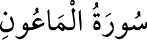

107- el-MÂÛN SÛRESİ
Mâûn, zekât vermek yahut bir şeyi geçici olarak kullanması için birine ödünç
vermek sûretiyle yardımda bulunmak demektir. Âlimlerin çoğuna göre tamamı
Mekke’de inmiştir, 7 veya 6 âyettir. Dîni yalanlayan, iyilikten uzak duran kimseler
hakkında inmiştir.